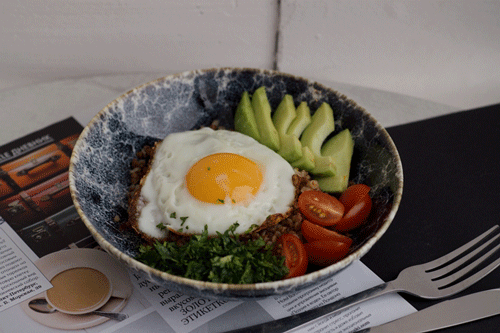
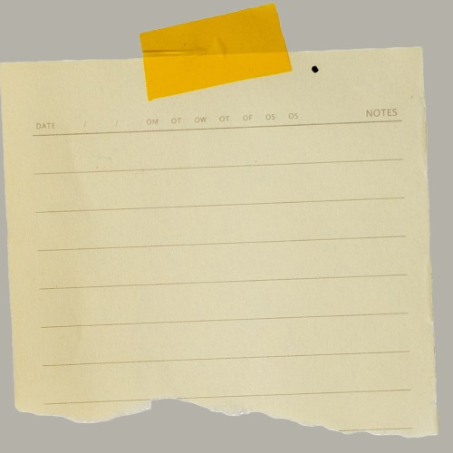

Healthy Eating

What is healthy eating?
Good Question!
I think healthy eating can mean something different to each person. While we are all human, we are all individuals with individual needs. What is right for one person might not be right for someone else. I think the most important thing is learning to listen to your body about what it needs.
Do you have any major or minor health concerns?
You should always consider any medical concerns you have.
- Do you have diabetes?
- Have you had surgery that could affect your digestive ability?
Do you have any allergies or sensitivities?
Some people choose to eat things they know they have a mild allergy or sensitivity to because they like the food or dislike the inconvenience that it causes. If you do this your body will hold on to weight due to the inflammation that food is causing.
Do you need to gain, lose or maintain your weight?
Obviously, that is a huge concern either way and should be considered with the diet you choose for yourself.
What are your food and lifestyle preferences?
Are you vegetarian, vegan or just don’t like a food that some diet says to eat a lot of?
If you do not want to eat the food that is a huge part of a diet, then you are not going to stick to the diet.
Is budget a concern?
Some diets can call for very expensive super foods or supplements.
The best thing for your body is always going to be whole food. The good news is they tend to be less expensive than many of their processed counterparts.
What have to tired before that made you feel your best?
Think back to when you felt and looked your best. What were you doing then? Many times this can give you a glimpse into what makes your body happy.
Many times if answer the above questions you will be led to the right diet for you. Taking into account your health concerns and preferences can give you are great starting point. Then, what were you eating when you felt and looked your best. What were the main foods you were eating then?
For me, I have quite a few food sensitivities. I must avoid gluten, dairy, and potatoes. I have had my gall bladder taken out, so I also have to be conscious of how much fat I consume. I felt my best when I was eating a vegan diet back before I had kids. So while I prefer to eat meat now I try to focus on fruits and veggies over meat. I also know I feel much better and have more energy when I eat low to no sugar and focus on whole foods as much as possible. I am also very active throughout the day, so while I love to cook many times I need things I can throw together quickly.
A few websites with some great foods I love:

https://www.forksoverknives.com/recipes/vegan-menus-collections/30-minute-meals/
https://highcarbhannah.co/recipes/
https://www.skinnytaste.com/
https://greenhealthycooking.com/recipes/